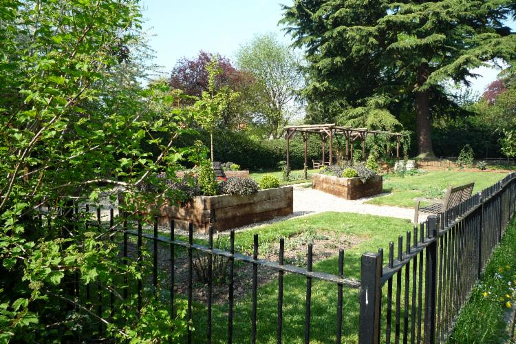
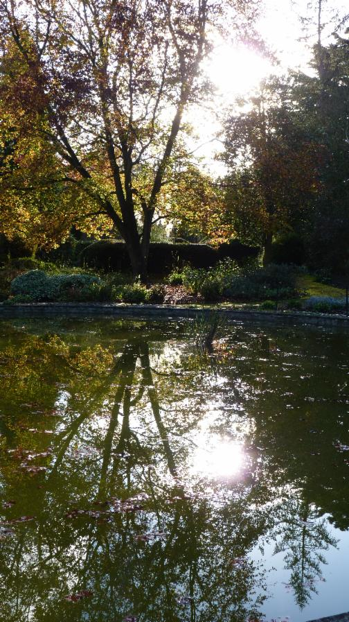
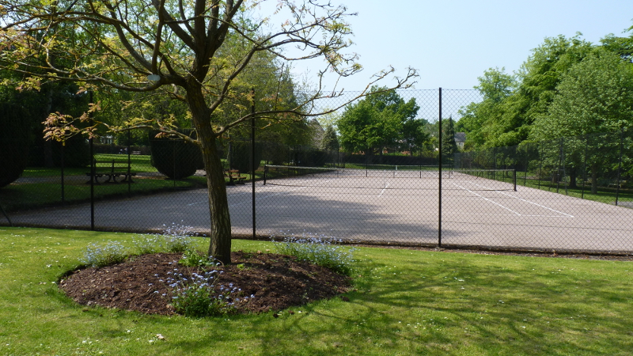

A tranquil green space for relaxation, contemplation and recreation
Many events are held in the gardens throughout the year.Want to participate? Have an idea to help us raise money? Get in touch, become a Friend of the Gardens, 'like' our Facebook page, or return here for more details.
Relax in the John Ray Garden


Play tennis on one of the two good-quality hard courts (call 07768 188047 to book) or take the children to the recently refurbished playground.
Come for an hour or bring a picnic and spend the day!
Well maintained toilets including disabled and baby-changing facilities are available on-site for your convenience.